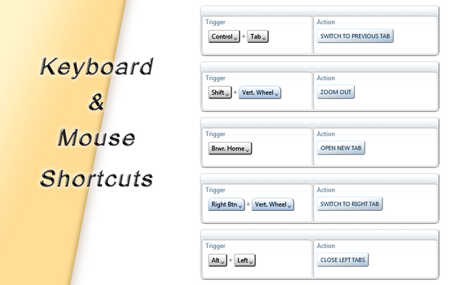

Customize ANY keyboard shortcut, Create NEW shortcuts,
Mouse gestures, Works on ALL tabs!... and much more.

Learn more
AutoControl is a native extension
AutoControl brings out the power of Chrome's native extensibility to achieve what
no other extension can:
AutoControl can customize or disable ALL browser shortcuts, even those prohibited
to regular extensions, such as Ctrl+Tab, Ctrl+ScrollWheel, and any other.
AutoControl shortcuts and gestures work on ALL tabs, be it the New Tab Page, extension
pages, settings pages, protected pages, PDF documents, you name it.
AutoControl doesn't inject code into every page you visit, thus leaving their functionality
intact, which avoids sluggish pages and conserves CPU and memory.
AutoControl shortcuts and gestures are implemented natively, which makes them
respond instantly at all times.
Learn more about native extensions at the FAQ.
System Requirements
Being a native extension comes at a cost. Additional effort is needed to support each operating system.
Currently, AutoControl is supported on:
Windows XP
Windows Vista
Windows 7
Windows 8/8.1
Windows 10
Windows 11
Step by step demonstration
Learn more at the following topics:
 Forum
Install now from theChrome Web Store
Forum
Install now from theChrome Web Store